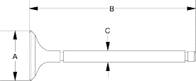
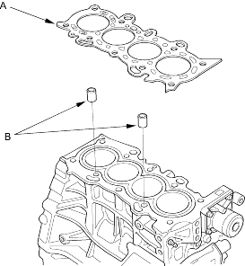
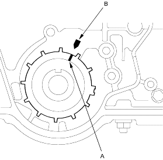

Measure the valve in these areas.
D14Z6, D16V1 engines:
Intake Valve Dimensions
A Standard (New):29.90 - 30.10 mm
(1.177 - 1.185 in.)
B Standard (New):118.17 - 118.97 mm
(4.652 - 4.684 in.)
C Standard (New):5.480 - 5.490 mm
(0.2157 - 0.2161 in.)
C Service Limit:5.45 mm (0.215 in.)
Exhaust Valve Dimensions
A Standard (New):25.60 - 26.10 mm
(1.020 - 1.028 in.)
B Standard (New):115.55 - 116.35 mm
(4.549 - 4.581 in.)
C Standard (New):5.450 - 5.460 mm
(0.2146 - 0.2150 in.)
C Service Limit:5.42 mm (0.213 in.)
D16V3 engine:
Intake Valve Dimensions
A Standard (New):29.90 - 30.10 mm
(1.177 - 1.185 in.)
B Standard (New):118.27 - 118.87 mm
(4.656 - 4.680 in.)
C Standard (New):5.480 - 5.490 mm
(0.2157 - 0.2161 in.)
C Service Limit:5.45 mm (0.215 in.)
Exhaust Valve Dimensions
A Standard (New):25.90 - 26.10 mm
(1.020 - 1.028 in.)
B Standard (New):115.65 - 116.25 mm
(4.553 - 4.577 in.)
C Standard (New):5.450 - 5.460 mm
(0.2146 - 0.2150 in.)
C Service Limit:5.42 mm (0.213 in.)

Install the cylinder head in the reverse order of removal:
- Clean the cylinder head and block surface.
- Install the cylinder head gasket (A) and dowel pins (B) on the cylinder block. Always use a new cylinder head gasket.

- Set the crankshaft to TDC. Align the TDC mark (A) on the timing belt drive pulley with the pointer (B) on the oil pump.
